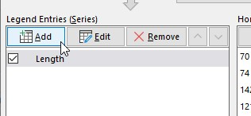

Graphing in Excel
If you recall from lecture, there are two major reasons to graph data: 1) to better understand the data, as the analyst, and 2) to produce a clear presentation of the data to others. Today we will work with graphs that serve one or the other purposes (or in some cases both).
The data set we will use contains measurements of sizes and shapes of bears captured over time. At each capture, bears were identified by a unique ID number that was written on an ear tag placed on each bear, and the month of capture was recorded. The age and sex of the animal were recorded, as well as measurements of the head length and width, neck girth, chest girth, and total length of the animal. Since animals were often captured repeatedly, observation number was recorded to indicate the first, second, third, etc. capture. Animals were given names in addition to their unique ID numbers to make it easier to refer to individual bears.
Today we will make graphs that will help us address the following questions:
1. What are the weights of males and females?
2. What is the nature of the relationship between weight (a volumetric variable) and various measured lengths (linear variables)?
3. Is there a difference in the length/weight relationship between males and females?
4. How does body weight vary from month to month for each sex?
The first, third, and fourth questions will be addressed with graphs that both help us understand the data ourselves, and are appropriate ways of presenting the data to others. The second question will be addressed by producing plots with different types of axis scaling, so that we can determine whether the relationship between weight and length measurements is linear, exponential, or a power function.
Preliminaries
Download this file to the folder H:/biol365/graphing and open it in Excel.
The first step in graphing data is to think about what the variables are, and what kinds of graphs might be useful for them. The variable definitions and variable types are given here:
| Variable |
Variable definition | Variable type |
|---|---|---|
| ID |
A unique identifier for individuals |
Numbers are used as ID's, but are meant to be labels - treat as
categories |
| Age |
Age in months |
Numeric, discrete |
| Month |
Numeric month |
Numeric, discrete, circular scale. Can be used as an ordinal set
of categories (as if month names were used) |
| Sex |
Sex of each bear |
Categorical |
| Head length |
Length of head in cm |
Numeric, continuous |
| Head width | Width of head in cm | Numeric, continuous |
| Neck girth | Distance around the neck in cm | Numeric, continuous |
| Weight | Weight in kg | Numeric, continuous |
| Observation number | A sequential number indicating which measurement the row represents for bears measured more than once | Numeric, but meant to indicate an order - treat as an ordinal label |
| Name | Name of the bear | Categorical |
Knowing the variable types allows us to pick appropriate graph types. Be aware that the variable type is sometimes different than it appears to be - Month, ID, and Observation Number are all represented as numbers, but we will be using them as though they were ordinal categories. Month could potentially be used as a numeric variable as well - we might want to average the month numbers to find out the average month of the observations. Numeric months repeat between December and January, so Month is a circular variable, but since the period the bears were active starts in April and ends in November we don't need to worry about that with this data set.
Bear in mind that variables sometimes are coded with numbers when they are really categorical variables. For example, Sex might be coded as 1 for male and 2 for female, but that doesn't mean the variable becomes numeric - it means that the numeric codes should be treated as categories.
Organizing the data for plotting
Programs that are written to primarily be graphing packages would be less fussy than Excel is about data organization. For example, when we build a graph we would be able to assign any column we want to the x-axis and the y-axis, and would be able to group by a categorical variable for assigning colors and symbols.
Excel doesn't give us these conveniences. We will be producing several scatter plots with these data, in which the weight of the bears is the x-axis. Excel will use the left-most column as x.
So, to save us some hassles later, we should move Weight to the left of all the length columns we will be using so that Weight will automatically be assigned to the x-axis of our graphs.
To move Weight, click on the J in the gray column letters to select the entire Weight column. Right-click and select "Cut". Then, select all of column E by clicking on the E. Right-click and select "Insert cut cells". This will move Weight to the left of all the lengths.
1. What are the weights of males and females?
To address this question, produce a column chart of weights for each sex. The easiest way to do this is to first produce a pivot table with the needed data, then use the "PivotChart" to graph the data.
A. Select a cell within the data set (A2 would be good), and start a Pivot Table (click on the "Insert" tab, and insert a pivot table).
B. Calculate mean weights for each
species. Use "sex" as the row labels, and "weight" as the data variable.
Make sure to change the calculated value from "Sum" to "Average". The
table should look like
this .
.
C. With a cell of the pivot table
selected. click on the "Analyze" tab under the "PIVOTTABLE TOOLS", and
select "PivotChart ".
".
D. From the "Insert Chart" chart type selector, choose the "Column Chart" type (the first option for the row). A chart will be placed in the worksheet. PivotCharts are designed for exploring your data, rather than for final presentation. PivotCharts are linked to the Pivot Table, and as you change the table the chart will change to reflect its new contents. The gray button that says "Average of Weight" gives the variable you are graphing, and the "Sex" drop down allows you to filter and sort the levels of sex.
E. Change the labeling. Although the basic chart is fine, there is a poor choice for a title, no axis labels, and a legend that is unneeded. Double-click on the title and change it to "Average weights of bears".
Select the chart and you will see a black + and a paintbrush tool
outside the right side of the graph. Click on the + and next to the
"Axis Titles" option there is a black triangle - click the triangle, and
check the "Primary vertical" option (like this ). You will see that "Axis
Title" is now showing on the y-axis. Double click the inserted Y-axis
title and change it to "Weight (kg)".
). You will see that "Axis
Title" is now showing on the y-axis. Double click the inserted Y-axis
title and change it to "Weight (kg)".
Finally, click on the legend (the blue square with Total next to it) and delete it.
F. Select the entire graph by clicking into the white space in the upper right (you will see a "Chart Area" popup if you hover your pointer in this area), right-click and copy the graph.
Select cell K1 and right-click, and under "Paste options" use the "Picture" option (the one on the right). This will paste a picture of the graph, which won't change when you change the pivot table.
G. Change the pivot table to group by Sex in the columns, and to group by Month in the rows. You'll see the chart updates so that there are two bars for each month on the x-axis, one for males and one for females, with sex indicated by color.
Now that we have color coding to interpret we need that legend back, so click on the + and check the box next to "Legend".
2. What is the nature of the relationship between weight and measured lengths?
Lengths and volumes of simple geometric objects, like cubes and spheres, have power function relationships. Power functions raise a variable to an exponent (as opposed to exponential functions which raise a logarithmic base to the power of a variable).
|
For example, the volume of a cube is v = l3, where l is the length of one side, and since length is raised to an exponent this is a power function. Equivalently, we can express the relationship between volume and length as l = v1/3; volume is being raised to an exponent, so this too is a power function. A plot of length vs. volume is shown to the left. If we take the log of both sides of the equation, we get log(l) = 1/3 log(v), which is the equation for a straight line with an intercept of 0 and a slope of 1/3. You can see that both length and volume are on a log scale, so when we put the graph on a log scale for both axes the line straightens out, like the example on the right. If we ask Excel for a trend line and its equation, it tells us that y = x0.3333, which is what we were expecting. |

Similarly, we can derive the relationship between diameter and volume of a sphere in the same way: volume of a sphere is v = 4/3 π (d/2)3, where d is the radius from the center of the sphere to a point on the surface. The relationship between volume and radius is thus d = (6/(4π))1/3v1/3. On a log scale this becomes log(d) = log((6/(4π))1/3)+ 1/3 log(v). Although log((6/(4π))1/3) is more complex, it is still just a constant, and will be the intercept for a straight line on a log-log plot. With the same slope for both cubes and spheres the lines will be parallel, but the difference in intercept will make the line for the sphere intersect the y-axis higher than the the line for the cube does. The graph for a sphere on a linear plot, and on a log-log plot are shown to the left and right, respectively. The trend line's equation shows that the exponent is still 0.3333, and the only difference is that the constant is equal to 1.2407, which is equal to (6/(4π))1/3. |
So, with simple, solid geometric objects we expect the exponent on the power function to be 1/3, and the only difference between objects will be the intercept term.
We can't calculate the volume of bears by submerging them in water and recording the volume of water displaced for practical reasons. However, we can expect the weight of the bear to be proportional to its volume, and weight is relatively easy to measure. We would expect a power function relationship between bear weights and linear dimensions, with an exponent of 1/3, if bears were simple geometric objects.
However, bears are complex geometric objects, not simple ones. Although we have reason to expect bears will have a power function relationship between weight and linear dimensions, we can't be certain that the exponent will be exactly 1/3. Studying the scaling relationships between different body dimensions and weight is called allometry, and allometric scaling relationships typically take the form of a power function.
We will start by making a scatter plot of the lengths of the bears vs. their weights, and will then change the axes to log scales to confirm that a power function is the right relationship between length and weight. Once we are confident this is the case, we can use Excel's trend lines to give us the equation that describes the relationship.
Graphing length vs weight
A. To begin, you will make the basic plot of length vs. weight, with weight on the x-axis, and length the y-axis.
To do this you need to select the cells that have the weights, and the cells that have the lengths, including the column headings.
Select the cells E1 through E144, which have the weights. You can do this by selecting E1, scrolling to the bottom of the sheet and holding down SHIFT while you click cell E144.
Now we need to select the lengths, but they are in a column that isn't touching the currently selected cells. To select a "discontinuous" block of cells, hold down the CTRL key while you click on Length in cell I1, and then drag down to cell I144 (holding CTRL the whole time). Once you have selected down to I144 you can release the mouse button and the CTRL key.
Now, switch to the "Insert" tab, and select "Scatter", then "Scatter with points only ".
You'll see that Weight is taken as the x-axis, and length is on the
y-axis. By default both axes are linear, so if the points were scattered
around a straight line you would conclude you had a linear relationship.
The column names are used as labels in the legend (which we don't really
need with only one variable).
".
You'll see that Weight is taken as the x-axis, and length is on the
y-axis. By default both axes are linear, so if the points were scattered
around a straight line you would conclude you had a linear relationship.
The column names are used as labels in the legend (which we don't really
need with only one variable).
B. The graph is missing some axis labels, so click on the + and check "Axis titles" to add both x- and y-axis titles. Change the x-axis title to "Weight", and the y-axis title to "Length".
You can also change the graph title from "Length" to "Linear Relationship", and delete the legend.
Now, copy the graph, and paste it as a picture below the original.
C. Change the axis scaling to determine the relationship between weight and length.
On the original version of the graph, click on one of the numbers on the y-axis to select the axis. Then, right-click and select "Format axis". Check the box next to "Logarithmic scale" - you'll see the graph now has a logarithmic y-axis, in which each tick indicates a 10-fold change in length. The data don't look very straight with this graph, but if they did we would conclude the relationship was exponential, so change the chart title to "Exponential".
Copy the exponential graph and paste it as a picture below the linear scale graph.
Now, change the y-axis back to a linear scale by un-checking the logarithmic scale checkbox. Next, click on one of the numbers on the X-axis to select it, right-click and select "Format axis", and set the x-axis to a logaritmic scale. The X-axis is now on a logarithmic scale, but the Y-axis is on a linear scale, and if the points fell along a straight line we would conclude the relationship was logarithmic - change the title to "Logarithmic". It's looking better than the exponential plot, but we have one more to go.
Copy the logarithmic plot and paste it below the exponential plot.
Now we can try a log-log plot. Click on the Y-axis, right-click and select "Format axis". Keep weight on a logarithmic scale, and set length to also have a logarithmic scale. You now have both axes on logarithmic scales, so this is a "log-log" plot. The data series are nearly straight lines, indicating that there is a power function relationship between length and weight, as we expected. Change the title to "Power".
The power graph shows the relationship we expected, and the points look nice and linear, so we can fit a trend line and get the equation for it.
Trend lines
The four different possible functional relationships we explored by changing x and y axes to log scale are shown below. Hover over each to what each trendline type is.
y = a10bx
Taking the log of both sides gives us:
log(y) = log(a) + bx.
Exponential relationships become straight lines on a plot when y is graphed on a log scale with x on a linear scale
Linear relationships have the form:y = a + bx
Linear relationships give straight lines on a plot with both y and x on a linear scale
Logarithmic relationships have the form:10y = axb
Taking the log of both sides gives us:
y = log(a) + b log(x)
Logarithmic relationships become straight lines on a plot when y is graphed on a linear scale, with x graphed on a log scale
Power functions have the form:y = axb
Taking the log of both sides gives us:
log(y) = log(a) + b log(x)
Power functions become straight lines on a plot when both y and x are graphed on a log-log scale.
Now that we're sure that there is a power function relationship between length and weight, we can have Excel fit the appropriate trend line to the data, and give us the equation.
D. Select one of the points on the graph, then right-click and select "Add trendline". In the "Format Trendline" window that pops up, select "Power", and check "Display equation on chart". Switch to the "Fill and line" section (click on the pouring paint can), and change the color to black. Change the "Dash type" to a solid, un-dashed line, and increase the width to 2; this will make the line easier to see on the graph.
The equation is a little hard to see, so select it and drag it into the white background where you can read it. Remember that with a simple geometric solid the scaling relationship between length and volume is a 1/3 exponent, but here the relationship is 0.2494. For an irregular object we tend to get smaller volumes for a given length, so this smaller exponent is expected.
Once you know what the relationship is it's perfectly acceptable to plot on a linear scale, in which case the power function is a curved line. Set both of the axes back to a linear scale, and you'll see that the power function is now a curve through the data on the graph.
E. Repeat this set of steps using one of the other length variables of your choice (head.l, head.w, neck.g, or chest.g). Find the graph that gives the most linear relationship, name the relationship (as linear, exponential, logarithmic, or power), and add a trendline with equation. Copy and paste as picture each of the graphs you make.
3. Is there a difference in the length/weight relationship of male and female bears?
To compare the length/width relationship we will need to plot two different scatter plots on the same graph, one for each sex. If you remember from using MINITAB in your stat class, we could just identify a grouping variable to automatically separate the data for plotting, but Excel can't do this. In Excel you either need to re-arrange your data so that each sex is in a different column, or you need to plot one sex first, and then add the other to the graph manually. We will use the second approach: we will plot the females first, then add the male data manually.
A. Sort the data by sex. Switch to the raw data sheet, and select cell D1 (which has the column label Sex). On the "Home" tab, find "Sort and Filter" in the "Editing" block (right side of the tool bar). Click on "Sort and Filter" → "Sort A to Z". Since all of the columns are touching this will sort the whole data set.
B. Plot Length against Weight for females. Weight will be on the X-axis, length on the Y-axis. To do this select the Weight data for the females, including the column label (so, cells E1 to E45). Then, hold down the CTRL key, and select the Length data (I1 to I45). Once both are selected, switch to the "Insert" tab, and select a "Scatter" plot with no connecting lines.
C. Add an x-axis label (Weight (lb)) and a y-axis label (Length (in)). Change the plot title to "Length/weight by sex".
D. Add the male data. This is done in several steps:
-
Select one of the female points on the graph, right-click, and choose "Select data".
-
In the window that pops up, select "Add " for the "Legend Entries" box.
-
In the window that pops up, use "Males" as the series name. Click on the "zoom box" (the little box next to the blank) for the "Series X values", and select the weights for the males (these are in cells E46 to E144). Then, click on the "zoom box" for the "Series Y values" and select the cells with lengths for the males (these are in cells I46 to I144). When you click "OK" you will be returned to the "Select Data Source" window.
-
While you're in the "Select Data Source" window click on the female series (which is probably called "Length" at the moment), select "Edit", and change the name to "Females". Close the window when you're done. You should now have a scatter for both males and females on the same plot.
- Add a legend to the graph, which will identify which sex is assigned which color.
{kind=link}
E. Add a trend line for each sex. Click on the scatter for one of the sexes, right-click and select "Add trendline". Select a "Power" curve, and click select the "Display equation on chart" check box. Repeat for the other sex. Move the equations so that they are readable.
You'll see that the line for males is steeper than for females - at lighter weights the males are shorter than females, but at heavier weights the males are longer.
4. How does body weight vary from month to month?
Finally, we are interested in how measured weights change from month to month. We will need a pivot table with average weights each month by sex, and then a pivot chart showing these averages.
A. Make a new pivot table (don't modify the one you already made, make a new one in its own worksheet). Use Month as the row labels, Sex as the column labels, and average of Weight as the data.
B. Use PivotChart to make a line
graph of weights for each sex by month. Since all the months from April
through November are represented a line graph will look fine, because
even spacing between months is appropriate. Add a PivotChart using a
line graph as the graph type. Choose the type with overlapping lines and with symbols showing .
.
Add a chart title ("Weights by month - line"), x-axis title ("Month"), and y-axis title ("Weight").
C. What you do next is to make a point - add a linear trend line for males, with equation. to the graph. You'll notice that Excel doesn't stop you, or warn you that this is a bad idea, but it is indeed a bad idea.
The reason that you shouldn't add trend lines to line graphs is that line graphs have categorical x-axes. Even though the months are coded using numbers, Excel treats these as though they are just category labels, and doesn't use the months in the trend line estimate. Instead Excel assigns numbers to the month categories of its own, starting with 1 and going up to 8, and it is these arbitrary category numbers that it uses in its trend line fitting. Excel doesn't tell you that's what it's doing, but that is in fact what it's doing.
So, if we want to use the trend line option to get an equation for change over time then we can't use the line graph. The correct graph type is the scatter plot, which has a numeric axis for both x and y.
D. We can make a graph that looks nearly identical to the line graph but with a numeric x-axis if we use a scatter plot with connecting lines. We can't use a scatterplot in a pivot chart, so we first have to extract the data. You can do this by selecting the table (cells A3 through D13), copying it, and then doing a paste-special of the values in the cells below the pivot table (select cell A20 and use the "Values" paste option to paste the numbers without the pivot table formatting).
Next, select the Months, Female, and Male weights from the values you just pasted - do not include the totals. If you pasted your table into cell A20, then the range to select is A21:C29.
While the cells are selected, insert a scatterplot, with straight connecting lines (this one).
{kind=link}
The graph produced looks very similar to the line graph, but with some subtle differences. First, the scaling is different, but we could make them nearly identical by fiddling with the x-axis scaling. The other difference is that the tick marks in the line graph fall between the numbers, whereas they are directly above the numbers on the scatterplot. This is a visual cue to you that the line graph is treating the numbers as categories, whereas the scatter plot uses them as numeric values.
Add the axis labels as in the line graph. Use the chart title "Weights by month - scatter".
E. Add a trend line for males to the scatterplot, with equation. You'll see that the slopes are the same for the two versions of this graph, but the intercepts are not the same. The reason that they don't match is that the line graph's trend line is bogus. The slopes are only the same because, coincidentally, the spacing between the months is 1 unit, just like the numbers that Excel assigns the months in the line graph, but that won't always be true. The intercept is the length expected when month is equal to 0. In the scatterplot, month 0 is four less than the lowest month in the data set (which is 4), but in the line graph the number assigned to the lowest month is 1, which puts 0 just one unit below. The difference between these is 3 units, and if you multiply the slope by 3 you get (6.2385 x 3) = 18.72, which is the amount of difference between the intercepts (173.19 - 154.47 = 18.72).
I don't know why Excel allows you to do things like this, but it does, so you can't rely on Excel to keep you out of trouble. You have to know what the graphs are, and how to use them correctly. Thus, even though it lets you, don't fit a trend line to a line graph.
5. When are most of the measurements made in the data set?
We are going to generate some counts of numbers of observations by month, and then look at our graphing options for this kind of data.
A. Switch back to the data set and make a new pivot table in a new worksheet. This time use Month as both the rows and as the value field. Change the statistic from sum to count.
B. Make a pivot chart, using the pie chart. Pie charts are only appropriate for displaying compositional data - proportions, relative frequencies, or percentages. The data we used are counts (frequencies) rather than proportions or percentages, but since proportions are just frequencies divided by the total number of data points, and percentages are just proportions multiplied by 100, Excel will do the necessary conversion for you.
When you display counts in a pie chart the purpose is to get a visual impression of which months were most common in the data set. The actual values are not displayed, however, which makes it impossible to tell what the actual number of data points is. We can fix that by clicking on the + and selecting "Data labels" (if you click on the triangle next to "Data labels" you'll see you have some choices about where to put them - the default position inside the slices is fine).
Change the graph name to "Months that bears were observed". Copy the graph and paste as a picture below the graph.
C. If we wanted the pie chart to express the data as percentages, we need to change the settings on the Pivot Table to show percentages, click on +, then "Data labels", then click the triangle and select "More options". Check the box next to "Percentage", and the values are shown as percentages instead of counts. You can change the separator to period as well (it defaults to a comma, which is the European convention for the decimal point).
Copy and paste a picture of this graph below the other pie chart picture.
D. A pie chart is fine for a single set of frequencies, but if we want to compare the frequencies between the sexes we'll need a different chart type. You can change the chart type under "PIVOTCHART TOOLS", tab "Design", option "Change Chart Type". Another good option for displaying counts made in two or more categories is a clustered column chart. Select this type.
Now, add "Sex" as a column variable in your pivot table. The chart should update to show two bars per month, one for each sex. Since we have a y-axis now we don't need to label the bars, so click + and un-check data labels.
Add axis labels, and call the x-axis "Month", and the y-axis "Count".
Copy and paste this graph below your last pie chart.
E. You can change the y-axis to a percent scale, but it's not an axis option for this chart type. Instead we need to make the change to the Pivot Table. Double-click on "Count of Month", and select the "Show Values As" tab. Drop down the menu for "Show values as" and select "% of Column Total" - since the column total is all of the females or all of the males, this will give the percentage of female observations each month, and the percent of male observations each month. You'll see that the y-axis is not on a percent scale in you graph.
Change the y-axis label to "Percent", and copy/paste a picture below your previous graph.
F. Instead of focusing on how the counts are distributed among months, we might be interested in comparing the relative number of males and females between the months. We can do this with a stacked column chart.
First, put the Count of Month settings back to count units instead of percentages (set "Show Values As" to "No Calculation").
Next, change the layout. You'll see that you have a choice between a stacked column (which puts the counts for males on top of the counts for females), and a 100% stacked column (which expresses the data as the percent males and females each month, with the bars all going to 100%). Both are fine, but if we want to make the comparison of the sex ratio each month easy, we want all the bars to be the same height and the relative amount of each color to indicate the percent of observatons that were each sex. Select the 100% stacked column chart. You'll see that just like with a pie chart Excel has done the math for you and set the y-axis to a percent scale.
Change the y-axis label to "Percent".
6. How do the sexes compare across all of the variables?
We have six different measurements of the sizes of the bears, so to compare them across all six variables we need a graph with six dimensions. Radar charts are just such a graph, so we will give them a try next.
A. Make one more pivot table, this time with sex as the column labels, and weight, head.w, head.l, neck.g, length, and chest.g as value fields. Change all of these from sum to average, and for the "Show Values As" tab select "% of row total" for all (the graph doesn't work well if you're plotting variables with different units, so since we want to compare males and females we can divide each sex's mean by the mean overall - since percentages are unit-less ratios this makes the comparison between sexes on the graph easier). Drag the sigma values button into the rows so that each average is in its own row.
B. Insert a pivot chart, and select the "Radar" option. You'll see that each ray on the radar is a different variable axis, with all of them starting at 0 in the center. The means for each sex is plotted on each axis, and then the means are connected with lines to make it easy to compare the sexes. You can see that the female's line is inside of the male's line, which means the males are bigger on all of the variables.
Assignment
That's it! When you are done, save your spreadsheet and upload it to the class web site.